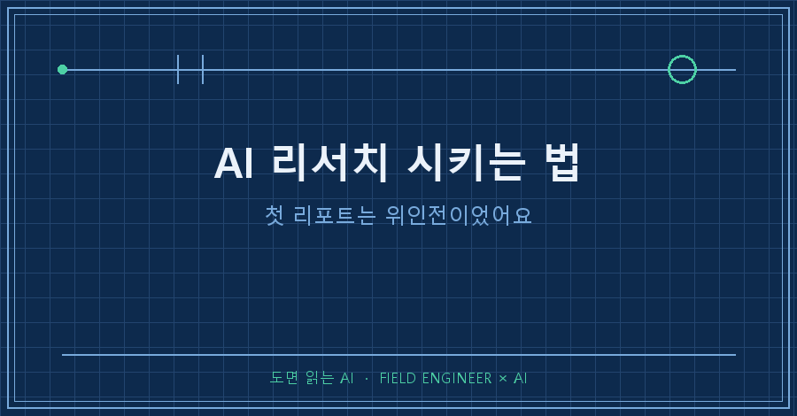
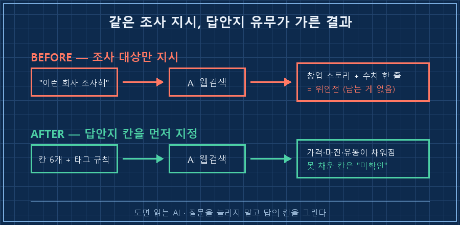
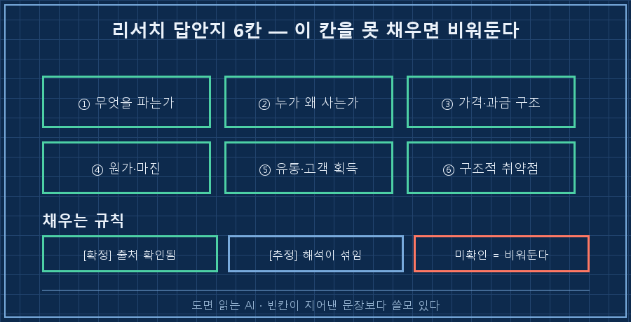
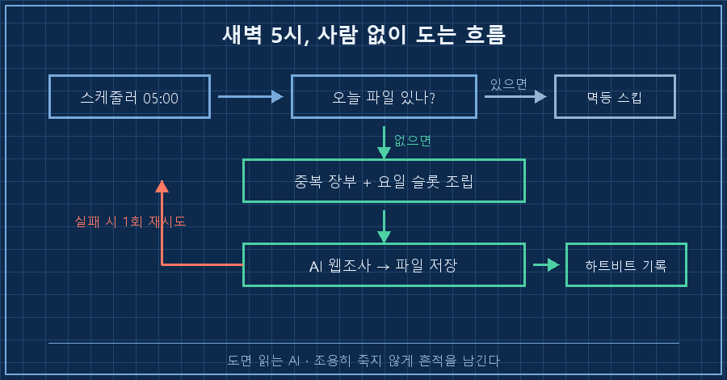

AI한테 매일 새벽 5시에 리서치 리포트를 한 편씩 쓰게 해봤어요. 엿새째 돌고 있는데, 첫날 산출물은 위인전이었습니다.
결론부터 적을게요.
AI 리서치 시키는 법의 핵심은 "뭘 조사해"가 아니라 "어떤 칸을 채워서 가져와"입니다. 조사 대상을 아무리 자세히 불러줘도 답안지 양식을 안 주면, AI는 검색에서 제일 많이 나오는 이야기를 매끈하게 정리해옵니다. 읽을 땐 재밌는데 덮으면 남는 게 없어요.
현장에서 설비 만지는 일로 15년쯤 밥을 먹었습니다. 양식 한 장이 결과물을 통째로 바꾼다는 걸 몸으로 배운 직업이에요. 같은 작업을 시켜도 빈칸이 정해진 서식을 주면 열 사람이 비슷하게 적어 오고, 백지를 주면 열 사람이 딴소리를 적어 옵니다. AI도 똑같더라고요.

1. 첫 리포트를 읽자마자 반려했어요
시작한 이유는 단순했어요. 맨손으로 시작해서 굴러가는 회사들이 실제로 뭘 팔아 먹고사는지, 하루 한 건씩 들여다보고 싶었거든요.
사람 손으로 하면 사흘이면 끊깁니다. 그래서 AI한테 넘겼어요.
첫 리포트는 이런 식이었습니다.
누가, 언제, 어떤 어려움을 딛고 창업해서, 지금 이만큼 컸다.
매끄럽고 감동적인데 제가 알고 싶은 건 한 줄도 없었어요..
그날 제가 남긴 말이 이겁니다.
"벤치마킹한 회사가 뭘 해서 돈을 버는지 정도는 기본으로 알아야 하는 거 아닌가."
"200달러 값어치도 못하는 보고서는 적지 말자."
근데 곱씹어보니 AI 잘못이 아니었어요.
저는 "맨손으로 시작한 기업을 조사해라"까지만 시켰거든요.
조사 대상만 정해주고 답의 모양은 안 정해줬으니, AI 입장에선 제일 안전한 걸 골랐던 거죠. 창업 스토리요..
2. 고친 건 조사 지시가 아니라 답안지였어요
그래서 프롬프트에서 손댄 곳은 한 군데뿐이에요. 리포트가 가져야 할 칸을 미리 그려서 박아버렸습니다.
## 한 줄 정체 — 무엇을 팔아 어떻게 버는 회사인가
## 사업 해부 — 누가 왜 사나 / 가격·과금 구조(실수치) / 원가·마진 / 유통·고객획득
## 0→1 — 첫 고객과 첫 매출 (어떻게, 시작 후 얼마 만에)
## 갈림길의 판단 3개 — 그때 무엇을 보고 어떻게 결정했나
## 오늘 훈련할 판단 1개 (독자가 스스로 답해볼 질문 1문장)가운데 "사업 해부" 한 줄이 사실상 이 양식의 심장이에요. 여기서 채워야 하는 칸이 여섯이거든요.
무엇을 파는가, 누가 왜 사는가, 가격과 과금 구조, 원가와 마진, 유통과 고객 획득 경로, 그리고 구조적 취약점.
이 여섯 칸이 안 채워지면 그 리포트는 저한테 쓸모가 없습니다.
여기에 규칙 두 줄을 더 붙였어요.
"모든 수치와 일화에 [확정]/[추정] 태그를 달고, 확인 못 한 건 미확인으로 남겨라."
"기억만으로 수치를 쓰지 마라. 검색으로 확인하고 출처 주소를 남겨라."
바뀐 결과물은 아예 다른 물건이었습니다.
어제 나온 리포트를 예로 들면, 2008년에 혼자 시작한 화면 설계 도구 회사(Balsamiq)가 걸렸는데요.
제품 가격 79달러, 첫 6개월 매출 16만 2,302달러에 총지출 2만 9,574달러, 환불은 2건.
가격을 그렇게 정한 이유까지 나와 있었어요. 경쟁 제품이 79달러였고 "내 게 더 낫다"고 판단해서 같은 값을 붙였다고요. 전부 공식 블로그 주소가 달려 있었습니다.
저는 이런 문장 읽으려고 자동화를 만든 거였어요.
더 마음에 든 건 못 채운 칸입니다.
초기에 모아둔 돈이 얼마였는지는 공개 자료에 없어서, 리포트에 그냥 "미확인"이라고 적혀 있어요.
칸이 없으면 AI는 그 자리를 그럴듯한 문장으로 메웁니다. 칸이 있으면 비워둘 수가 있고요.
빈칸이 지어낸 문장보다 백 배 쓸모 있더라고요.
여러분도 AI한테 조사 시켜보면 비슷하지 않으세요? 질문을 더 길게 쓰는 것보다 답의 형식을 정해주는 쪽이 훨씬 빨리 먹힙니다.

3. 매일 쌓이기만 하고 안 읽는 문제는 이렇게 막았어요
자동으로 뭔가가 매일 만들어지면 열에 아홉은 안 읽고 넘어갑니다. 저는 그걸로 여러 번 데였어요..
AI 리서치 시키는 법에서 양식 다음으로 중요한 게 이 부분이더라고요. 그래서 장치를 세 개 넣었습니다.
첫째, 중복 방지 장부예요. 다룬 회사 이름을 한 줄씩 파일에 적어두고, 다음 실행 때 그 목록을 프롬프트에 통째로 넣습니다. 안 넣으면 AI는 유명한 사례부터 계속 다시 가져와요.
둘째, 요일마다 시대를 다르게 배정했어요. 한 우물만 파면 비슷한 회사만 나오거든요.
| 요일 | 그날의 슬롯 |
|---|---|
| 월 | 고전 (산업화~1970년대) |
| 화 | 1970~1995년 |
| 수 | 1995~2008년 (웹) |
| 목 | 2008~2015년 (모바일·소프트웨어) |
| 금 | 2015년~현재 |
| 토 | 한국 기업 |
| 일 | 실패 사례 |
셋째가 제일 효과가 좋았어요. 리포트 맨 끝에 "오늘 훈련할 판단 1개"를 질문 한 문장으로 쓰게 했습니다.
어제 것은 이랬어요.
"내가 만들려는 것의 첫 유통은 내가 새로 만들 채널인가, 아니면 이미 사람이 모여 서성이는 남의 자리인가."
리포트가 읽을거리에서 질문지로 바뀌니까, 훑고 넘기던 게 답을 적게 되더라고요.
4. 엿새째 새벽 5시, 아직 살아 있습니다
첫날만 손으로 돌려보고, 다음 날부터는 작업 스케줄러에 걸어 혼자 돌게 뒀어요. 어제 로그입니다.
05:00:02 === 데일리 사업사례 시작 (요일 슬롯 3) ===
05:00:02 claude -p 호출 (최대 20분)...
05:03:05 | SAVED: ...\사례\2026-08-13_Balsamiq.md
05:03:05 커버드 장부 추가: Balsamiq
05:03:06 [HEARTBEAT] OK Balsamiq (로컬+Notion)3분 만에 끝났어요. 20분까지 기다렸다가 안 끝나면 스스로 접습니다.
파일이 안 만들어졌으면 한 번 더 시도하고, 두 번 다 실패하면 실패로 기록을 남기게 해뒀어요. 조용히 죽는 게 제일 무섭거든요.
같은 날 실수로 두 번 돌리면 "멱등 스킵"이라고 찍고 그냥 넘어갑니다. 어제 것 위에 덮어쓰는 사고를 막으려고요.
로그 끝에 붙은 "로컬+노션"은 저장을 두 군데 했다는 뜻이에요. 파일이 정본이고 노션은 폰으로 들여다보는 사본입니다. 노션 쪽이 실패해도 파일은 남게 순서를 잡아뒀어요.
정직하게 한계도 적어둘게요.
저는 이렇게 나온 리포트를 아직 초안 취급합니다. 사람이 안 본 산출물이니까요.
중요한 판단의 근거로 쓸 일이 생기면 그때 출처를 다시 열어서 확인해요. 수치에 [추정] 태그가 붙어 있는 이유가 그겁니다.

자주 묻는 것 두 가지
Q. AI가 조사해온 수치, 그냥 믿어도 되나요?
그대로는 안 믿습니다. 대신 확인된 것과 추정한 것에 각각 태그를 달게 하고, 못 찾은 건 미확인으로 비워두게 해요. 출처 주소도 같이 남기게 하고요. 이렇게 해두면 나중에 확인할 때 열어볼 곳이 명확해집니다. 태그가 없으면 어디부터 의심해야 할지를 몰라서 결국 전부 다시 봐야 하거든요.
Q. 매일 돌리면 비슷한 얘기만 나오지 않나요?
그래서 다룬 대상 목록을 파일로 남겨 다음 실행 프롬프트에 넣어줍니다. 요일별로 범위도 다르게 잡고요. 이 둘이 없으면 사흘이면 같은 자리를 맴돌아요.
정리하면, 제가 바꾼 건 질문이 아니라 답안지였어요.
조사 범위를 늘리는 대신 칸을 먼저 그렸고, 그 칸을 못 채우면 비워두게 했습니다. 그랬더니 AI가 아는 척을 멈추고 아는 것만 적기 시작했어요!
쌓인 리포트를 나중에 어떻게 찾아 꺼내 쓰는지는 다음 편에 이어서 적겠습니다.
---
쓰고 있는 답안지 양식이랑 리포트 실물은 makefield.ai에 그대로 올려둡니다. 가져다 쓰실 만한 게 있으면 그대로 쓰세요.
태그: #AI리서치시키는법 #AI조사자동화 #AI보고서양식 #AI프롬프트작성법 #AI리포트 #AI에이전트 #무인자동화 #파이썬자동화 #AI할루시네이션 #AI출력형식 #작업스케줄러 #AI로일하기 #AI업무활용 #현장엔지니어 #도면읽는AI